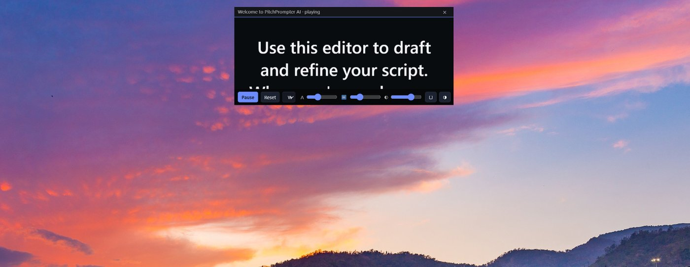

PitchPrompter AI combines a desktop teleprompter, AI script coaching, and speech-driven scrolling in one local-first application.

Generic teleprompters show text. They don't help you deliver.
It is not just a teleprompter. It is the speaking companion you wish you had before every important call.
Keep your script close to the webcam so your audience sees eye contact instead of distracted glances.
The teleprompter follows your speech instead of forcing you to match a fixed scrolling speed.
Rewrite scripts, improve clarity, generate stronger openings, and practice delivery before important conversations.
No account, no telemetry, no cloud storage. Your scripts and API keys remain on your device.
A small, sharp set. No feature mall.
Borderless reading surface pinned near your webcam. Top-aligned caret minimises the looking-away tell.
Stays above Chrome, Teams, Zoom, Meet, and most apps. Movable, resizable, transparent-capable.
In-app banners explaining the safe pattern: share a window, not your full desktop.
Windows-only opt-in using SetWindowDisplayAffinity to hide the prompter from many screen-share paths. Best-effort, not guaranteed.
Speech-driven auto-advance with forward-only, smoothed cursor. Pauses when you pause; never jumps.
11 actions across tone, length, and structure. Your API key, your provider, your data path.
Scripts, settings, sessions live only on your device. No account. No telemetry. No analytics SDKs.
Words per minute, filler word counts, long pauses, confidence score, post-session summary.
Space, R, ↑/↓, +/− — drive the entire prompter without leaving the camera.
Six steps. No setup ceremony.
Local editor. Autosaves to this device only.
Bring your own OpenAI-compatible key. Eleven targeted rewrite actions. Nothing is sent until you click Send to AI provider.
Pick a placement preset. A small borderless window opens above all other apps.
Drag the top strip. Reading caret sits within an inch of your camera lens.
Not your full desktop. The in-app banner reminds you. Capture exclusion is an extra layer.
Manual scroll or Voice Follow. Practice Mode for the rehearsal pass.
High-stakes speaking situations where the words have to land.
Present roadmaps, strategy reviews, and stakeholder updates.
Prepare for interviews and tell your story confidently.
Pitch investors, customers, and partners.
Deliver demos without looking away from the customer.
Record videos while maintaining natural eye contact.
Handle executive reviews and company-wide presentations.
Local-first isn't a slogan; it's the architecture.
Private Windows test build. Recommended for trusted testers only.
Windows x64 portable. Unzip and run. No installer required.
SHA-256: 0ee423819c73f43331680dc132f6c2bd736904019f7dca2883bfb8ef4998f36b
Calling these out up front so you know what to expect.
PitchPrompter AI is evolving into an AI Speaking Companion that helps people prepare, practice, and deliver high-stakes conversations with confidence.
Roadmap items are direction, not commitments. Today's product is the v0.1 build above. We will not ship something we cannot stand behind.
Please test on a real Teams, Zoom, or Meet call. Then fill in
FEEDBACK_TEMPLATE.md from the ZIP and send it back.
Five minutes is enough.
Feedback form link will be added here once the form is published.
In the meantime, please fill in FEEDBACK_TEMPLATE.md
from inside the ZIP and email it to the address you received this
build from.